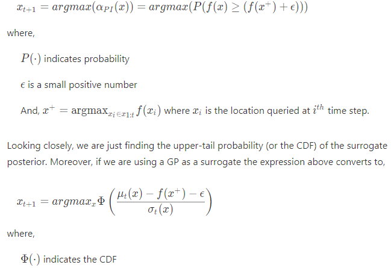
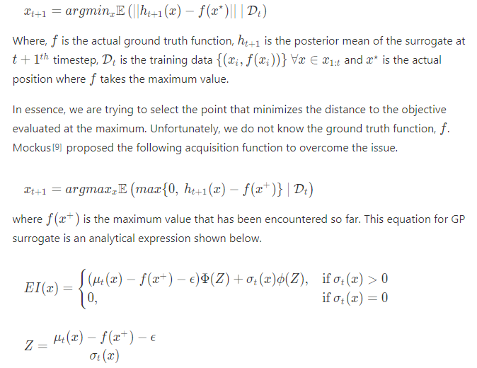
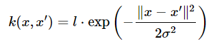

Bayesian Optimization
贝叶斯优化
- 简介
-
贝叶斯优化适用于用尽可能少的数据寻找出函数极值的应用场合。例如石油勘探，每次钻井勘测开销巨大，业主希望用最少的勘测次数找出石油最丰富的地块儿，则贝叶斯优化能够为此提供帮助。
- 限制
-
1. 被测函数有简单的可行域；
2. 被测函数连续且结构简单，极值易求；
3. 无需求导，不提供梯度信息；
4. 训练集数据有限；
5. 如有噪声，则噪声是独立的且呈正态分布，具有共同但未知的方差。 - 构建
-
1. 设计代表模型，对函数建模并定义其先验概率；
2. 获取训练集，利用贝叶斯规则计算后验概率；
3. 利用取样函数(acquisition function) α(x)获得下一个采样点。其中取样函数为后验概率的函数；
4. 新增采样点，并回到步骤二。如此迭代直至收敛或预算耗尽。 - 相比于active learning
-
主动学习关注全局的分布，会优先将不确定性(variance)最高的点纳入训练集。贝叶斯优化不关注全剧的分布状况，只在意极值点的位置。
- PROBABILITY OF IMPROVEMENT (PI)
-
该方案选择最大值最有可能提高的点作为下一个查询点，注重于减小风险。

当ϵ增大时，该算法逐渐接近Active Learning，即优先检测不确定性最高的区域。 - EXPECTED IMPROVEMENT (EI)
-
该方案选取最优可能获得最大幅度提高的点作为下一个查询点，注重于提高回报。

同样，当ϵ增大时，该算法逐渐接近Active Learning，即优先检测不确定性最高的区域。 - Thompson Sampling
-
该方案每一次迭代都从后验中选取一个函数，并对其进行进一步优化。该方案能够在对高不确定性区域进行探索的同时进一步研究已知最大区域。
取样函数（acquisition function）
在神经网络中使用Bayesian Optimization
贝叶斯优化可以帮助我们快速的找到最优超参数，如：学习速率、batch size和激活函数等。一下程序利用scikit-optim实现bayesian optimization。
log_batch_size = Integer(
low=2,
high=7,
name='log_batch_size'
)
lr = Real(
low=1e-6,
high=1e0,
prior='log-uniform',
name='lr'
)
activation = Categorical(
categories=['relu', 'sigmoid'],
name='activation'
)
dimensions = [
dim_num_batch_size_to_base,
dim_learning_rate,
dim_activation
]
import gp-minimize from scikit-optim
# initial parameters (1st point)
default_parameters =
[4, 1e-1, 'relu']
# bayesian optimization
search_result = gp_minimize(
func=train,
dimensions=dimensions,
acq_func='EI', # Expctd Imprv.
n_calls=11,
x0=default_parameters
)
GPyOpt Bayesian Optimization Tool
- 简介
-
GPyOpt黑盒优化器可以简化贝叶斯优化的使用，该工具将帮助我们快速寻找函数的极值。假设f是待测未知函数，我们仅了解其扰动ϵ，故有 。 我们需要估测一系列的x，并使得累计后悔值 最小。所以当我们越快逼近极值时，累计后悔值就越小。
- Gaussian Process（GP)
-
高斯常用于对未知函数建模，可通过均值μ(x)和协方差函数k(x,x′)来参数化。其中协方差函数是GP的核函数，必须是连续、对称且正定的。一种常用的核是平方指数，如下：

其中 σ2 和 l 为正。 - 构建
-
1. 设计代表模型，对函数建模并定义其先验概率；
2. 获取训练集，利用贝叶斯规则计算后验概率；
3. 利用取样函数(acquisition function) α(x)获得下一个采样点。其中取样函数为后验概率的函数；
4. 新增采样点，并回到步骤二。如此迭代直至收敛或预算耗尽。 - 相比于active learning
-
主动学习关注全局的分布，会优先将不确定性(variance)最高的点纳入训练集。贝叶斯优化不关注全剧的分布状况，只在意极值点的位置。
- PROBABILITY OF IMPROVEMENT (PI)
-
该方案选择最大值最有可能提高的点作为下一个查询点，注重于减小风险。
当ϵ增大时，该算法逐渐接近Active Learning，即优先检测不确定性最高的区域。 - EXPECTED IMPROVEMENT (EI)
-
该方案选取最优可能获得最大幅度提高的点作为下一个查询点，注重于提高回报。
同样，当ϵ增大时，该算法逐渐接近Active Learning，即优先检测不确定性最高的区域。 - Thompson Sampling
-
该方案每一次迭代都从后验中选取一个函数，并对其进行进一步优化。该方案能够在对高不确定性区域进行探索的同时进一步研究已知最大区域。
取样函数（acquisition function）
引用自：https://distill.pub/2020/bayesian-optimization/